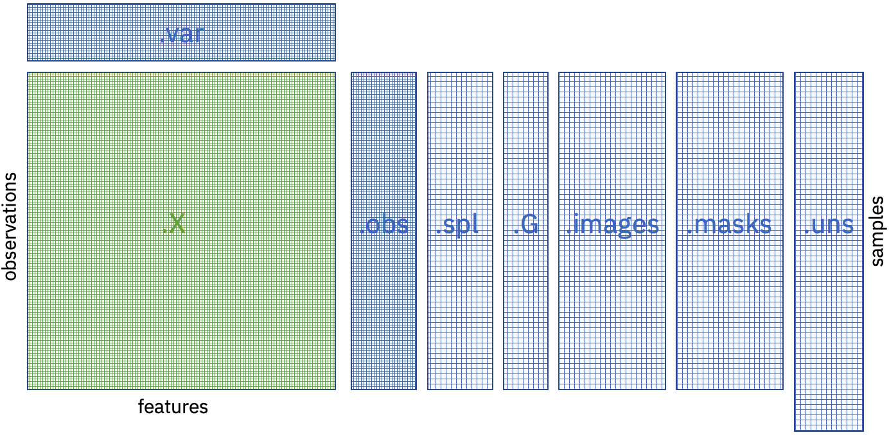
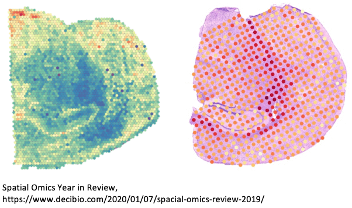

Populate SpatialOmics instance¶
Spatial omics technologies are an emergent field and currently no standard libraries or data structures exists for handling the generated data in a consistent way. To facilitate the development of this framework we introduce the SpatialOmics class. Since we work with high-dimensional images, memory complexity is a problem. SpatialOmics stores data in a HDF5 file and lazily loads the required images on the fly to keep the memory consumption low. The design of this class is inspred by AnnData, a class developed for the analysis of single-cell data sets.
Objective
Data standard for consistent method development
Technology-agnostic (resolutions, multiplexing and modalities )
Attributes
X: Single-cell expression values (observations)
var: Annotation of features in X
obs: Annotation of observations
spl: Annotation of samples
G: Graph representation of observations
images: Raw images
masks: Segmentation masks
uns: Unstructured data

Data hierarchy
Sample-level information: patient features, acquisition details
Observation-level information: expression levels, coordinates, phenotyping 
import tarfile
import tempfile
from skimage import io
import os
import pandas as pd
from spatialOmics import SpatialOmics
# create empty instance
so = SpatialOmics()
import urllib.request
import tarfile
# url from which we download example images
url = 'https://ndownloader.figshare.com/files/29006556'
filehandle, _ = urllib.request.urlretrieve(url)
# extract images from tar archive
fimg = 'BaselTMA_SP41_15.475kx12.665ky_10000x8500_5_20170905_122_166_X15Y4_231_a0_full.tiff'
fmask = 'BaselTMA_SP41_15.475kx12.665ky_10000x8500_5_20170905_122_166_X15Y4_231_a0_full_maks.tiff'
fmeta = 'meta_data.csv'
root = 'spatialOmics-tutorial'
with tempfile.TemporaryDirectory() as tmpdir:
with tarfile.open(filehandle, 'r:gz') as tar:
tar.extractall(tmpdir)
img = io.imread(os.path.join(tmpdir, root, fimg))
mask = io.imread(os.path.join(tmpdir, root, fmask))
meta = pd.read_csv(os.path.join(tmpdir, root, fmeta)).set_index('core')
# set sample data of spatialOmics
so.spl = meta[[fimg in i for i in meta.filename_fullstack]]
# add high-dimensional tiff image
so.add_image(so.spl.index[0], os.path.join(tmpdir, root, fimg), to_store=False)
# add segmentation mask
so.add_mask(so.spl.index[0], 'cellmasks', os.path.join(tmpdir, root, fmask), to_store=False)
import spatialHeterogeneity as sh
# extract centroids of observations
sh.pp.extract_centroids(so, so.spl.index[0], mask_key='cellmasks')
import numpy as np
from tqdm import tqdm
expr = so.images[so.spl.index[0]]
mask = so.masks[so.spl.index[0]]['cellmasks']
ids = np.unique(mask)
ids = ids[ids != 0]
# extract single-cell expression values
res = []
for i in tqdm(ids):
res.append(expr[:, mask == i].mean(1))
# add single cell expression values to spatialOmics instance
so.X[so.spl.index[0]] = pd.DataFrame(np.stack(res, axis=0), index=ids)
100%|██████████| 3066/3066 [00:03<00:00, 796.91it/s]